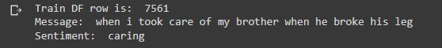
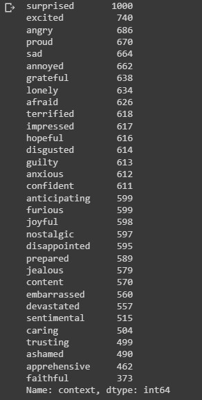
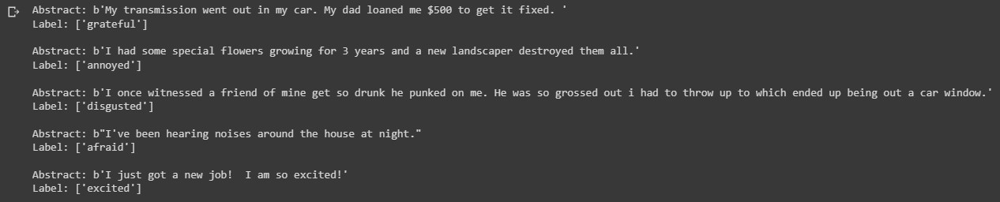

Can we detect a human's emotion given their messages on social media?
A common natural language processing task is to classify text. The most common type of text classification is where a text is classified as positive or negative. In this project, we will consider a slightly harder problem. Given a persons Facebook message, determine the individuals emotional state. This form of natural language processing is known as sentiment analysis. Note: You can find the accompanying code in the Colab Notebook link below. I highly encourage you to fork it, tweak the parameters, or try the model with your own dataset!
The Data
The data used for this project comes from Facebook's AI Empathetic Dialogue dataset. The training dataset comprises of 84169 entries with 8 columns consisting of non-null values of a users prompt (intial message) and a second users utterance (response to the message) associating a prescribed emotion in the context value. We'll only use the prompt and context columns for training our model. The link to the raw data can be found here.
Why use Sentiment Analysis?
Sentiment analysis tools are essential to detect and understand customer feelings. Companies that use these tools to understand how customers feel can use it to improve the customer experience. Sentiment analysis tools generate insights into how companies can enhance the customer experience and improve customer service. Some common use cases for sentiment analysis include chat bots, planning product improvements, and prioritizing customer service issues.
Related Work
Research reports related to this project were reviewed prior to the data preprocessing and model implementation stages. These reports were assessed to understand any potential pitfalls with building a text classification model. Any code sourced is cited within the colab notebook. Links for these reports are found below.
Setup files
Using a Google Colab notebook for this project. Import libraries and load files using the wget command.
# import libraries import os import random import numpy as np import pandas as pd import tensorflow as tf from tensorflow import keras from tensorflow.keras import layers import matplotlib.pyplot as pltDownload dataset from Facebook AI public files
!wget "https://dl.fbaipublicfiles.com/parlai/empatheticdialogues/empatheticdialogues.tar.gz"Unzip the training, validation, and test files.
{kind=link}
!tar -xvf empatheticdialogues.tar.gz
{kind=link}
Load and clean data
Let's start with the training data.
# load csv file splitname = "train" path = '/content/empatheticdialogues' # create variable for training dataset train_df = open(os.path.join(path, f"{splitname}.csv")).readlines() # print first two indices print(train_df[0].strip().split(",")) print(train_df[1].strip().split(",")) print(type(train_df))It appears that our data structure is a 2D array. The first index are the column names for the dataset. The second index are the first data values. The third index is similar so we'll assume the remaining indices are consistent.
{kind=link}
Next we'll parse through the dataset and extract the values from the prompt and context columns. Based on the print statements above, the values are located in the 2nd and 3rd index in each sub-array. We'll append the values to their own arrays.
raw_train_prompt_list = [] raw_train_context_list = [] for i in range(1, len(train_df)):Now we'll create a pandas dataframe using the two arrays.data_line = train_df[i].strip().split(",") raw_train_context_list.append(data_line[2]) raw_train_prompt_list.append(data_line[3].replace("_comma_", ","))
train_dataframe = pd.DataFrame(columns=['prompt','context']) train_dataframe['prompt'] = raw_train_prompt_list train_dataframe['context'] = raw_train_context_list print(f"There are {len(train_dataframe)} rows in the training dataset.") train_dataframe.head()The shape of the dataframe is (84169,2) Looks like there are duplicate entries
{kind=link}
total_duplicate_train = sum(train_dataframe[['prompt','context']].duplicated()) print(f"There are {total_duplicate_train} duplicate prompts (messages) to context (emotion) rows in the training data.")
{kind=link}
We'll remove the duplicates in order to remove biased performance estimates when training the model.
train_dataframe = train_dataframe.drop_duplicates(ignore_index=True) train_dataframe.shapeNow our training dataset has been reduced to 19307 rows.
{kind=link}
EDA + Pre-Processing
Let's display a random message from the training data with the accompying sentiment. Using a random index from the dataset.idx = np.random.randint(train_dataframe.shape[0]) print('Train DF row is: ', idx) print('Message: ', train_dataframe['prompt'].iloc[idx]) print('Sentiment: ', train_dataframe['context'].iloc[idx]) The output shows the row number for this data entry, the message from the Facebook user, and the users sentiment associated with the message. Let's display the value counts for each sentiment.
{kind=link}
print(train_dataframe['context'].value_counts()) The output above shows the distribution of 32 emotions in the dataset. Let's visualize the value counts using a horizontal bar chart
{kind=link}
train_dataframe.context.value_counts().sort_values().plot(kind = 'barh', linewidth=20, figsize = [8,8], title='Sentiment Frequency Training Data')It would be difficult for our text-classification model to predict the sentiment between 32 possible classes. Many of these sentiments are very similar. In order to improve the categorical accuracy of the model we'll divide the total number of emotions into 8 groups by grouping similar emotions together. Another benefit for grouping emotions is to obtain an increased number of examples per class with a balanced distribution during the training process. Create a function which groups similar emotions and appends them to a new array.
{kind=link}
def emotion_grouping(df_column):Use grouping function with the context column in the training data and add grouped column to dataframeexcited_list = ['excited', 'surprised', 'joyful'] afraid_list = ['afraid', 'terrified', 'anxious', 'apprehensive'] disgusted_list = ['disgusted', 'embarrassed', 'guilty', 'ashamed'] annoyed_list = ['angry', 'annoyed', 'jealous', 'furious'] grateful_list = ['faithful', 'trusting', 'grateful', 'caring', 'hopeful'] disappointed_list = ['sad', 'disappointed', 'devastated', 'lonely', 'nostalgic', 'sentimental'] impressed_list = ['proud', 'impressed', 'content'] prepared_list = ['anticipating', 'prepared', 'confident'] new_emotion_group_list = [] for index, value in df_column.items(): if value in excited_list: new_emotion_group_list.append('excited') elif value in afraid_list: new_emotion_group_list.append('afraid')) elif value in disgusted_list: new_emotion_group_list.append('disgusted') elif value in annoyed_list: new_emotion_group_list.append('annoyed') elif value in grateful_list: new_emotion_group_list.append('grateful') elif value in disappointed_list: new_emotion_group_list.append('disappointed') elif value in impressed_list: new_emotion_group_list.append('impressed') elif value in prepared_list: new_emotion_group_list.append('prepared') return new_emotion_group_list
train_grouped_emotions_col = emotion_grouping(train_dataframe['context']) train_dataframe['grouped_emotions'] = train_grouped_emotions_colDisplay side-by-side comparison of ungrouped and grouped emotion columns.
train_dataframe[['context','grouped_emotions']].head(10)We'll use the 'grouped_emotions' column for our target values. Let's check the value counts in the grouped_emotions column.
{kind=link}
train_dataframe['grouped_emotions'].value_counts()Visualize using a horizontal bar chart.
{kind=link}
train_dataframe.grouped_emotions.value_counts().sort_values().plot(kind = 'barh', linewidth=20, figsize = [8,8], title='Sentiment Frequency Training Data')Next Steps - Validation data We now have two columns in the training data we can use as the input and output variables for training our model. The 'prompt' column will be the input (X) and the 'grouped_emotions' column for the output (y). We'll perform the same steps for removing duplicates and grouping emotions for the validation data. The code below are the same pre-processing steps as above so there will be less descriptive notes.
{kind=link}
# pre-processing validation data splitname = "valid" path = '/content/empatheticdialogues' valid_df = open(os.path.join(path, f"{splitname}.csv")).readlines() print(valid_df[0].strip().split(",")) print(type(valid_df)) # load prompt and context in pandas dataframe raw_valid_prompt_list = [] raw_valid_context_list = [] for i in range(1, len(valid_df)):data_line = valid_df[i].strip().split(",") raw_valid_context_list.append(data_line[2]) raw_valid_prompt_list.append(data_line[3].replace("_comma_", ","))
valid_dataframe = pd.DataFrame(columns=['prompt','context']) valid_dataframe['prompt'] = raw_valid_prompt_list valid_dataframe['context'] = raw_valid_context_list
# drop duplicates valid_dataframe = valid_dataframe.drop_duplicates(ignore_index=True) valid_dataframe.shape
# display sentiment value counts print(valid_dataframe['context'].value_counts()) valid_dataframe.context.value_counts().sort_values().plot(kind = 'barh', linewidth=20, figsize = [8,8], title='Sentiment Frequency Validation Data') # use emotion_grouping function valid_grouped_emotions_col = emotion_grouping(valid_dataframe['context']) valid_dataframe['grouped_emotions'] = valid_grouped_emotions_col valid_dataframe[['context','grouped_emotions']].head(10) # display grouped_emotions value counts valid_dataframe['grouped_emotions'].value_counts() valid_dataframe.grouped_emotions.value_counts().sort_values().plot(kind = 'barh', linewidth=20, figsize = [8,8], title='Sentiment Frequency Validation Data')Next Steps - Test data For the test data, we perform the same preprocessing steps and group the emotions together. We do not need to drop duplicates for the test data because we'll only use the test data for the inference stage where we test our model on raw text data it hasn't seen. the code below is the same as the previous steps minus dropping duplicates.
# pre-processing test data splitname = "test" path = '/content/empatheticdialogues' test_df = open(os.path.join(path, f"{splitname}.csv")).readlines() print(test_df[0].strip().split(",")) print(type(test_df)) # load prompt and context in pandas dataframe raw_test_prompt_list = [] raw_test_context_list = [] for i in range(1, len(test_df)):data_line = test_df[i].strip().split(",") raw_test_context_list.append(data_line[2]) raw_test_prompt_list.append(data_line[3].replace("_comma_", ","))
test_dataframe = pd.DataFrame(columns=['prompt','context']) test_dataframe['prompt'] = raw_test_prompt_list test_dataframe['context'] = raw_test_context_list
# display sentiment value counts print(test_dataframe['context'].value_counts()) test_dataframe.context.value_counts().sort_values().plot(kind = 'barh', linewidth=20, figsize = [8,8], title='Sentiment Frequency Test Data') # use emotion_grouping function test_grouped_emotions_col = emotion_grouping(test_dataframe['context']) test_dataframe['grouped_emotions'] = test_grouped_emotions_col test_dataframe[['context','grouped_emotions']].head(10) # display grouping emotion value counts test_dataframe['grouped_emotions'].value_counts() test_dataframe.grouped_emotions.value_counts().sort_values().plot(kind = 'barh', linewidth=20, figsize = [8,8], title='Sentiment Frequency Test Data')
Vectorizing Text
Deep learning models, being differentiable functions, can only process numeric tensors: they can't take raw text as inputs. Vectorizing text is the process of transforming text into numeric tensors. This process involves a few key steps which includes standardizing text, tokenization, and converting each token into a numerical vector. We'll start by vectorizing our target labels, the 8 emotions we'll use for our sentiment analysis. Processing output labels We'll vectorize our target labels by using the keras StingLookup layer which maps string features to integer indices. By switching the output mode to 'multi_hot', input strings are encoded into an array where each dimension corresponds to an element in the vocabulary. A 'OOV' (out of vocabulary) token is created to cover any labels in the validation or test data that is not in the training data. Each target label will be a (1,9) shaped numeric array consisting of a 1 for the target label and 0's for the non-target labels.sentiment = tf.ragged.constant(train_dataframe['grouped_emotions'].values) lookup = tf.keras.layers.StringLookup(output_mode="multi_hot") lookup.adapt(sentiment) # the sentiment vocabulary added the [UNK] OOV token for unknown values sentiment_vocab = lookup.get_vocabulary() # [UNK] token created to cover unknown emotion sentiments print("Sentiment Vocabulary:\n") print(sentiment_vocab)We use the grouped emotion values and the adapt method from the StringLookup layer to form a one hot encoded numeric array representing each sentiment. The output shows a list of the 8 sentiments with the addition of the [UNK] out of vocabulary token. Lets test our StringLookup layer with a random sentiment from the training data.
{kind=link}
idx = np.random.randint(test_dataframe.shape[0]) sample_label = train_dataframe['grouped_emotions'].iloc[idx] print(f"Original label: {sample_label}") label_binarized = lookup([sample_label]) print(f"Label-binarized representation: {label_binarized}")Now that we have a one hot encoded array representing each sentiment, we need to create a function that inverts this array back into the string version of the sentiment.
{kind=link}
def invert_multi_hot(encoded_labels):Processing input text Each value from the prompt columns in the training, validation and test data are a sequence of strings representing a users message on Facebook. We need to create a dataset object where we can align the values from the prompt with the sentiment values from the grouped emotions column. We'll use our StringLookup layer in our function to create binary representions of our target labels. For our training dataset we'll shuffle the data to prevent bias when training our model."""Reverse a single multi-hot encoded label to a string vocab term.""" hot_indices = np.argwhere(encoded_labels == 1.0)[..., 0] return np.take(sentiment_vocab, hot_indices)
batch_size = 128 # function takes a pandas dataframe and returns a tensor.dataset object # with string inputs (messages) and one_hot binary versions of the target labels def make_dataset(dataframe, is_train=True):Implement the make_dataset function for each dataframelabels = tf.ragged.constant(dataframe["grouped_emotions"].values) labels_binarized = [lookup(x).numpy() for x in labels] dataset = tf.data.Dataset.from_tensor_slices((dataframe['prompt'].values, labels_binarized)) dataset = dataset.shuffle(batch_size * 10) if is_train else dataset return dataset.batch(batch_size)
train_dataset = make_dataset(train_dataframe, is_train=True) validation_dataset = make_dataset(valid_dataframe, is_train=False) test_dataset = make_dataset(test_dataframe, is_train=False)Lets see if our function was successful by taking a batch of 5 from our train_dataset and displaying the text input with the associated target label. We'll use the inverted multi-hot function to convert the labels as its string version.
text_batch, label_batch = next(iter(train_dataset)) for i, text in enumerate(text_batch[:5]): The output shows a batch from our training dataset. The Abstract shows the users message taken from the prompt column. The Label shows the sentiment associated with this message.label = label_batch[i].numpy()[None, ...] print(f"Abstract: {text}") print(f"Label: {invert_multi_hot(label[0])}") print(" ")
{kind=link}
Text Vectorization layer: bag of words approach
This process is a basic form of feature engineering that aims to erase encoding differences that you don't want your model to have to deal with. The simplest and most widespread standardization schemes include converting the text to lowercase, removing punctuation characters, and represent each tokenized text in numerical form. All this can be done using the keras TextVectorization layer. The output for this layer depends on your choice for how the text should be represented. There are 2 notable methods for text classification, the bag-of-words approach and the sequence model. In order to determine which method to use, look at the ratio between the number of samples in your training data and the mean number of words per sample. If the ratio is small-less than 1500, then the bag of words model will perform better. If the ratio is higher than 1500 the sequence model works best. Let's get the percentile estimates for the sequence lengths of the promptstrain_dataframe["prompt"].apply(lambda x: len(x.split(" "))).describe()
 We see that the average length for each message is about 18 words.
We see that the average length for each message is about 18 words.
# take number of samples in training data and divide by the mean sequence length 19307/18We see that the ratio is below 1500. We'll use the bag-of-words approach for text vectorization. Our layers output will return bigrams; tokens representing up to 2 words at a time. We'll also use the TF-IDF metric to give weights to the frequency of common bigram tokens. We'll limit the vocabulary to the 20,000 most frequent words. Otherwise we'd be indexing every word in the training data, potentially tens of thousands of terms that only occur once or twice which is not informative for our model.
{kind=link}
max_tokens = 20000 auto = tf.data.AUTOTUNE # text vectorization layer for preparing bag of words processing approach text_vectorizer = tf.keras.layers.TextVectorization(To build the vocabulary for our model, the TextVectorization layer needs to be adapted using the vocabulary from our training dataset. Our layer is now ready to vectorize the inputs for the training, validation, and test data.max_tokens=max_tokens, ngrams=2, output_mode="tf_idf", )
# `TextVectorization` layer needs to be adapted as per the vocabulary from our # training set with tf.device("/CPU:0"):text_vectorizer.adapt(train_dataset.map(lambda text, label: text))
# vectorize the text inputs in our datasets train_dataset = train_dataset.map( lambda text, label: (text_vectorizer(text), label), num_parallel_calls=auto ).prefetch(auto) validation_dataset = validation_dataset.map( lambda text, label: (text_vectorizer(text), label), num_parallel_calls=auto ).prefetch(auto) test_dataset = test_dataset.map( lambda text, label: (text_vectorizer(text), label), num_parallel_calls=auto ).prefetch(auto)Inspect our dataset objects
train_dataset
{kind=link}
validation_datasetWe see that our dataset objects now consists of tensors which hold the vectorized representations of the string input messages and their associated binarized target labels. The text vectorization process is now complete. We can now build our deep learning model.
{kind=link}
Build Model
Since we're using a simple bag-of-words approach for our machine learning model, we'll keep the architecture simple to reduce the chances of our model overfitting the training data. The model consists of a regular densely-connected neural network layer with ReLU as the activation function. We'll use 90 units for the output of this layer. To reduce overfitting we'll apply a 0.5 dropout layer. Since our task is a single-label multiclass classification problem, we'll apply the softmax function for our output layer. Our output will be a vector of the probability distribution of the 9 possible sentiments. Remember that we added the UNK out of vocabulary token as a possible sentiment.# create make_model function def make_model(max_tokens=max_tokens):Call our model and display the summary.inputs = tf.keras.Input(shape=(max_tokens,)) x = tf.keras.layers.Dense(90, activation='relu')(inputs) x = tf.keras.layers.Dropout(0.5)(x) outputs = tf.keras.layers.Dense(9, activation='softmax')(x) model = tf.keras.Model(inputs,outputs) return model
our_model = make_model() our_model.summary()
 We'll setup the parameters for compiling our model. For the optimizer we'll use a custom RMSprop with a learning rate of 1e-4. Since we have more than 2 label classes, we'll use the categorical crossentropy loss function to compute the loss value between the ground truth label and predicted label. We'll keep track of the categorical accuracy with the model's performance on the validation data and compile the model using 20 epochs; the number of times the dataset passes through the model. We'll save our model to visualize its performance after training.
We'll setup the parameters for compiling our model. For the optimizer we'll use a custom RMSprop with a learning rate of 1e-4. Since we have more than 2 label classes, we'll use the categorical crossentropy loss function to compute the loss value between the ground truth label and predicted label. We'll keep track of the categorical accuracy with the model's performance on the validation data and compile the model using 20 epochs; the number of times the dataset passes through the model. We'll save our model to visualize its performance after training.
#custom learning rate opt_rmsprop = tf.keras.optimizers.RMSprop(learning_rate=1e-4) epochs = 20 our_model.compile(optimizer=opt_rmsprop, loss ='categorical_crossentropy', metrics=['categorical_accuracy']) history = our_model.fit(train_dataset, validation_data=validation_dataset, epochs=epochs)The output display shows the metrics for each epoch during the training process. The categorical_accuracy metric shows how well our model can make predictions on the training data. We want our model to perform well on the validation data so our focus will be on the val_loss and val_categorical_accuracy metrics. At the end of our training stage the val_categorical_accuracy increases to 67 percent. Note that our_model.fit() returns a History object. This object has a member 'history', which is a dictionary containing data for the metrics that were monitored during training. We can use the dictionary to visualize the training process for the model.
{kind=link}
# visualize the training and validation loss train_loss = history.history['loss'] val_loss = history.history['val_loss'] plt.plot(train_loss, label = 'training loss') plt.plot(val_loss, label = 'validation loss') plt.legend()
{kind=link}
# visualize the accuracy during training train_accuracy = history.history['categorical_accuracy'] val_accuracy = history.history['val_categorical_accuracy'] plt.plot(train_accuracy, label='training accuracy') plt.plot(val_accuracy, label='validation accuracy' plt.legend()Let's evaluate our model using the test data.
{kind=link}
_, categorical_acc = our_model.evaluate(test_dataset) print(f"Categorical accuracy on the test set: {round(categorical_acc * 100, 2)}%.")We see that our model has a ~67% accuracy in correctly predicting the emotion from a users Facebook message in the test data. For the final stage of our project, we'll test our model on raw string messages.
{kind=link}
Inference
An important feature of the preprocessing layers provided by Keras is that they can be included inside a tf.keras.Model. We will export an inference model by including the text_vectorization layer on top of our_model. This will allow our inference model to directly operate on raw strings.# inference stage for i, text in enumerate(text_batch[:5]):The prediction results are not perfect but not below the par for a simple model like ours. We can improve this performance with models that consider word order like LSTM or even those that use Transformers or word-embedding layers.label = label_batch[i].numpy()[None, ...] print(f"Abstract: {text}") print(f"Label(s): {invert_multi_hot(label[0])}") predicted_proba = [proba for proba in predicted_probabilities[i]] predicted_label = [ x for _, x in sorted( zip(predicted_probabilities[i], lookup.get_vocabulary()), key=lambda pair: pair[0], reverse=True, ) ][:1] print(f"Predicted Label(s): ({', '.join([label for label in predicted_label])})") print(" ")
{kind=link}